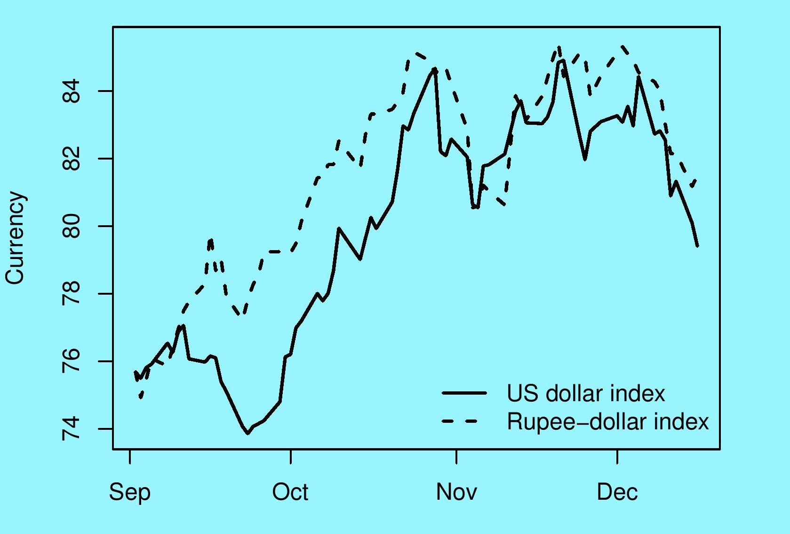
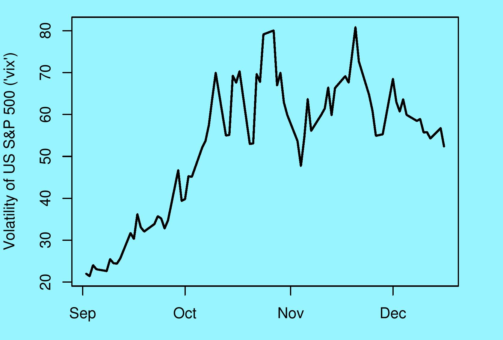
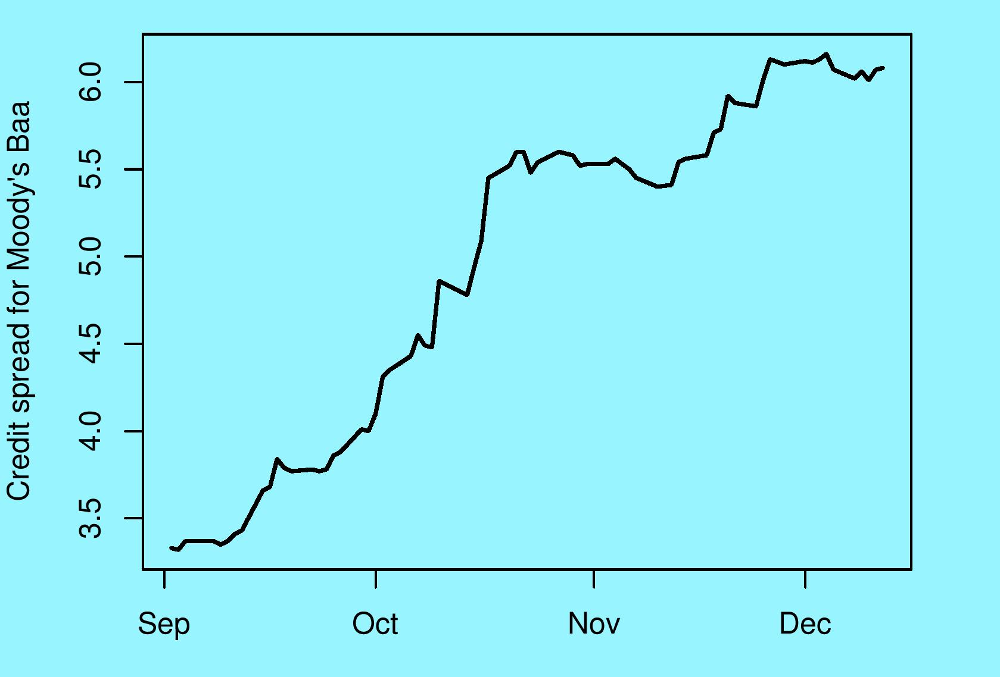

Global economy: unknown to known
Financial Express, 22 December 2008
From an Indian perspective, there are three key indicators in tracking the global financial crisis. An examination of these shows that while we are still away from conditions that prevailed prior to the death of Lehman on 15 September, there has been some improvements in conditions in the global financial system.
This is not because financial firms have healed themselves. Governments worldwide have thrown such a safety net around financial firms that risk has gone down. Some firms have been nationalised; some have been given liquidity support, and some have been given guarantees. Risk has declined greatly because a large financial failure like Lehman's is now not going to recur. As an example, when Citibank got into a confidence crisis, the US government came through with support for it.
 Fear that is rooted in the mistrust of financial firms of each other -- such as the unwillingness of banks to lend to each other -- are directly addressed by this safety net. But the safety net does not address fear that is rooted in the uncertainty faced by the macroeconomy and non-financial firms.
We are in the midst of a stream of bad news about the economy. But at the same time, this flow of data is giving a transition from the fear of an unknown devil (an impending downturn of unknown proportions), to a visible devil (a downturn that we can touch, see and grapple with).
The first important indicator of where we are is the "vix", the index of fear or uncertainty. It measures the expectations in the mind of the market about future volatility of the US S&P 500 stock market index. It is computed off prices of options on the stock market index, which are traded on the CBOE. From an Indian perspective, VIX matters directly because portfolio flows to India are higher when the VIX is lower (and vice versa).
 VIX was ruling at values between 20% and 30% per year. When Lehman died, at first the stock market did not understand the full significance of the event. After this the dislocation in the money market unfolded, and with a lag it started hitting the uncertainty of stock prices. VIX touched the massive level of 80% per year twice in the following period. In this period, net FII inflows into India were weakest.
On 16th December, VIX is at 52% per year which shows some improvement. At the same time, we are still some distance away from the sub-40 values which characterise normalcy.
The next indicator of interest is the US dollar. The US Fed reports a `US Major Currencies Index' which shows the average value of the dollar when expressed against currencies of the countries with capital account convertibility. The weights in this index are based on the share of each country in trade with the US.
Normally, a country that experiences difficulties would have a weakening of the currency. At first, when the bankruptcy of Lehman Brothers surfaced, the US dollar lost ground, as is expected. But after that, the US dollar did an unprecedented rise from a USM value of 74 to a USM value of 85 - an appreciation of 15% in a few weeks. Why did this happen? Global investors who were fleeing from the money market were buying US government bonds as a safe haven (even though the return on 90-day treasury bills in the US dropped all the way to zero). This required sale of other currencies and purchases of the dollar.
The dashed line in the graph shows the fluctuations of the rupee-dollar rate, where the starting value is re-expressed to match the starting value of the USM. Hence, this is termed a `rupee-dollar index' and not the rupee-dollar rate. The fluctuations of the rupee in this period primarily reflected fluctuations of the dollar and not changes in conditions in India.
The best thing for RBI to do in that period, by way of trading on the currency market, was to do nothing. If the USD appreciated by 15%, and if we tried to hang on to an old rupee-dollar parity (e.g. an insistence that depreciation beyond Rs.50 to the dollar was somehow unacceptable) then we would be artificially inducing an appreciation of the rupee.
RBI's trading on the currency market in this period shows some large numbers. At the same time, their significance should not be overstated. The currency market is very large and it is difficult to manipulate this market. As the graph suggests, the movements of the rupee-dollar rate were broadly similar to those of the countries with full capital account convertibility -- and in these countries the central bank seldom (if ever) trades on the currency market.
In recent weeks, some of the global financial panic has subsided. This has given a decline in the VIX, a depreciation in the USD (as money that went into America in the quest for safety started getting tempted away by higher returns outside America), and the rupee has appreciated.
The third series that we turn to is the difference in the interest rate between the corporate bond in America that is rated `Baa' by Moody's when compared with the interest rate on the 10-year US government bond. This particular rating category is important from an Indian point of view because it is roughly comparable to the credit risk of governments and the best companies in emerging markets like India. In other words, this credit spread shows financing conditions for borrowing by emerging market governments and the best companies.
This indicator has been stable at roughly 600 points in the recent weeks where the VIX and the USM showed improvements. It does not show improvement. The present values are far from the values of below 350 basis points which prevailed in early September. This suggests that while the world is cautiously gaining confidence on the future volatility of the S&P 500 index, and while some money is confident enough to cautiously leaving the US in the quest for higher returns, the world is not yet comfortable bearing Moody's Baa risk.
Back up to Ila Patnaik's media page
Back up to Ila Patnaik's home page